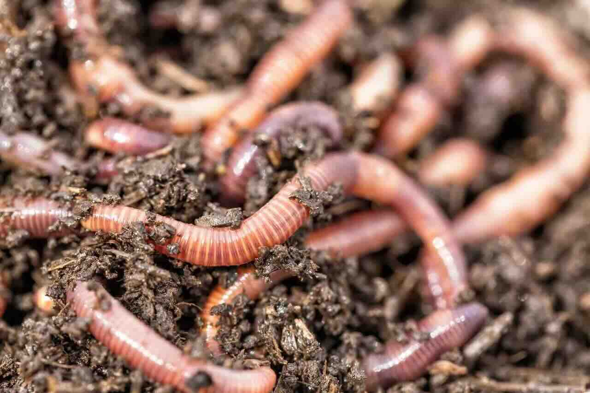
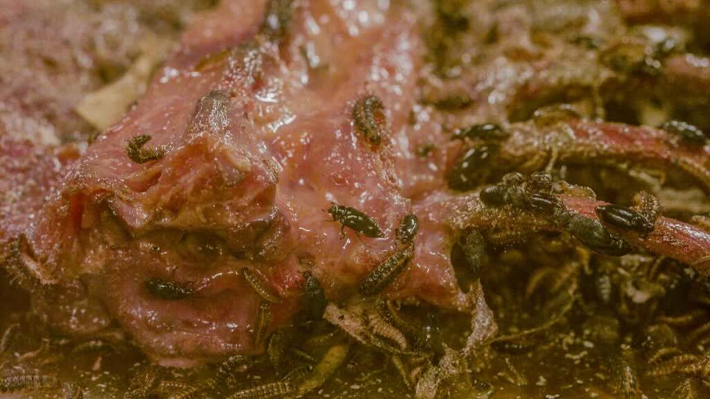

♻️ Decomposers: The Recycling Crew
Nature's Clean-Up Team
Decomposers are the unsung heroes of every ecosystem. They break down dead plants and animals, returning nutrients to the soil so the energy cycle can start all over again!

Earthworms are excellent decomposers that eat dead plant material and turn it into rich soil nutrients.

Many different organisms work together as decomposers in nature's recycling system.
Main Types of Decomposers:
- 🦠 Bacteria: Microscopic organisms that break down dead matter
- 🍄 Fungi: Including mushrooms, molds, and yeasts
- 🪱 Earthworms: Eat dead plant material and enrich soil
- 🐛 Insects: Many beetles, flies, and other bugs
Completing the Energy Circle
Decomposers are crucial because they:
- 🔄 Recycle nutrients back to the soil
- 🧹 Clean up dead material (imagine if nothing ever decomposed!)
- 🌱 Make nutrients available for plants to use again
- ⚖️ Keep ecosystems healthy and balanced

This detailed view shows how decomposers work to break down dead organic matter, turning it into nutrients that plants can use.
☀️ Sun → 🌱 Plants → 🐰 Animals → 💀 Death → 🦠 Decomposers → 🌱 Plants (and the cycle continues!)
🍂 Forest Floor Mystery
Have you ever wondered why forests aren't piled high with dead leaves and fallen trees from hundreds of years? It's because decomposers are constantly at work, breaking everything down and returning nutrients to feed new plants!